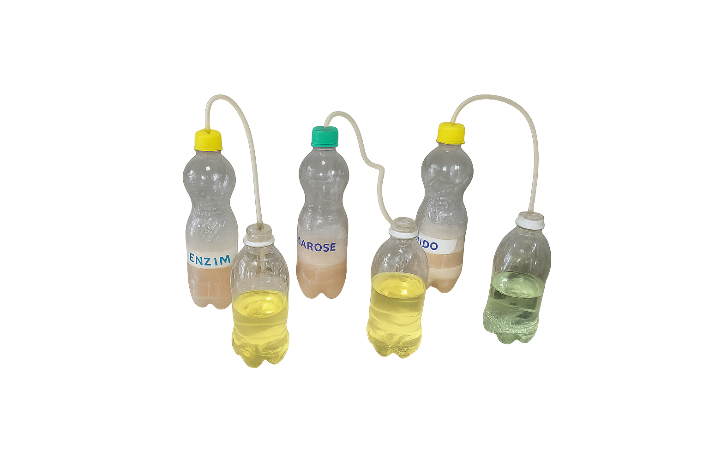

Fermentação como Ferramenta Educacional
📘 Introdução
A fermentação é um processo metabólico anaeróbico realizado por diversos microrganismos, com destaque para as leveduras, como Saccharomyces cerevisiae. Na ausência de oxigênio, esses organismos convertem açúcares simples, como a glicose, em etanol e dióxido de carbono (CO₂), permitindo a regeneração do NAD⁺ e a continuidade da via glicolítica. Essa rota bioquímica, além de sua relevância biológica, possui ampla aplicação industrial na produção de pães, cervejas, vinhos e biocombustíveis.
No contexto da bioquímica aplicada à engenharia de pesca, a fermentação pode ser utilizada como ferramenta didática para ilustrar conceitos fundamentais, como a degradação de carboidratos, a atuação de enzimas, a produção de gases e a variação de pH. O uso de indicadores ácido-base, como o azul de bromotimol, permite a visualização direta da liberação de CO₂, por meio da acidificação do meio.
A capacidade das leveduras de fermentar diferentes tipos de açúcares varia de acordo com sua estrutura. Açúcares simples como a sacarose são rapidamente metabolizados, enquanto polímeros complexos como o amido requerem a ação de enzimas hidrolíticas, como a α-amilase, para sua conversão em unidades fermentescíveis. Assim, a presença ou ausência dessas enzimas influencia significativamente o desempenho da fermentação.
Neste experimento, utilizou-se um sistema simples, de baixo custo e com alto valor pedagógico, envolvendo diferentes substratos (sacarose, amido com e sem enzima) e o monitoramento da fermentação por observação da liberação de gás e alteração de pH. A atividade serve como excelente recurso para a formação de estudantes da área de biotecnologia, química e engenharia de pesca, ao unir teoria e prática em uma abordagem investigativa e contextualizada.
🎯 Objetivos
Este experimento foi desenvolvido como ferramenta educacional para o curso de Engenharia de Pesca na Universidade Federal do Pará. O objetivo principal foi demonstrar, de forma prática, os conceitos bioquímicos da fermentação alcoólica, utilizando a levedura Saccharomyces cerevisiae e diferentes substratos (sacarose e amido), com e sem a adição da enzima α-amilase.
🧪 Materiais e Métodos
Materiais Utilizados
O experimento foi conduzido com materiais acessíveis e de fácil manuseio. Utilizaram-se seis garrafas PET (três de 500 mL e três de 300 mL), adaptadas com tampas contendo mangueiras de látex para vedação e condução dos gases gerados. Os substratos empregados foram sacarose comercial (açúcar refinado) e amido de milho. O agente fermentador foi o fermento biológico seco (Saccharomyces cerevisiae), ativado em água morna.

A produção de CO₂ foi monitorada indiretamente por meio de borbulhamento em em garrafas contendo com indicador de pH (azul de bromotimol), permitindo acompanhar a acidificação do meio conforme o gás reagia com a água. Empregou-se o indicador ácido-base azul de bromotimol em solução de NaOH 0,1 M.
Preparo das Soluções
Duas soluções de substrato foram preparadas:
- Sacarose: 40 g dissolvidos em 50 mL de água destilada a 40 °C;
- Amido: 40 g dissolvidos em 50 mL de água a 40 °C, dividida em duas porções — uma delas suplementada com α-amilase (1 mL por 100 mL de solução), e ambas submetidas a banho-maria a 60 °C para hidrólise por 60 minutos.
Simultaneamente, ativou-se o fermento biológico (20 g em 200 mL de água a 40 °C), mantido em repouso por 60 minutos. Essa suspensão foi então dividida em três porções de 60 mL para inoculação.
Montagem do Sistema
Três sistemas fermentativos distintos foram preparados:
- Sacarose + levedura;
- Amido sem enzima + levedura;
- Amido com α-amilase + levedura.
🔬 Resultados
- A sacarose promoveu uma fermentação mais rápida e visível já nos primeiros 10 minutos.
- O amido com enzima só começou a produzir CO₂ após a temperatura atingir cerca de 60 °C, condição ideal para a ação da α-amilase.
- A produção de gás foi maior no sistema com amido + enzima, após o início da hidrólise eficiente.
- A mudança de cor do indicador (verde para amarelo) evidenciou a liberação de CO₂ e a consequente acidificação do meio.
🎓 Aplicações no Ensino
A montagem experimental permitiu aos alunos correlacionar dados visuais e quantitativos com os fenômenos bioquímicos, desenvolvendo habilidades práticas e reflexivas. Além disso, a comparação entre diferentes substratos reforçou a importância da atividade enzimática na liberação de açúcares fermentáveis — um conhecimento diretamente aplicável em processos industriais, como produção de rações ou fermentação de resíduos do pescado.
📚 Referências
- Madigan, M. T. et al. Brock Biology of Microorganisms, 2022.
- Nelson, D. L. & Cox, M. M. Lehninger Principles of Biochemistry, 2021.
- Stanbury, P. F. et al. Principles of Fermentation Technology, 2017.
- Basso, T. O. et al. Metabolic Engineering, 2011.
- Gupta, R. et al. Process Biochemistry, 2003.